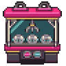
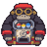
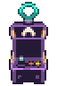
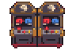
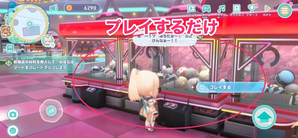
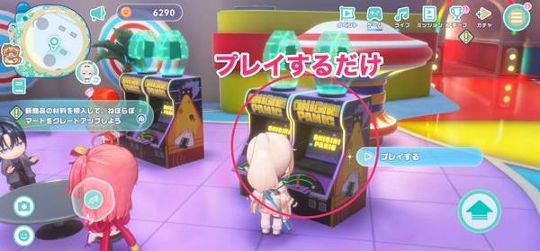
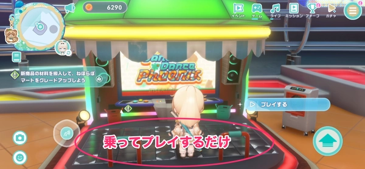

HOLOCRAWL · 고정지형 외벽 검토192
게임센터 광장 · 전용 외벽
남보라 금속 패널 · 청록/분홍 소형 조명 · 벽면 ARCADE 간판. 게임기·바닥·입구·통행 구조는191 그대로입니다.
21×19칸 큰 광장 하나에 캡슐 콩·로보로보 크레인·오니기리 패닉·댄스 댄스 피닉스·시바키아게 파이팅을 함께 배치했습니다. 게임기는 둘레에 두고 중앙9×7칸은 비워, 세 방향 입구와 각 게임기 앞이 이어지게 했습니다.
도트 준비 중…
벽에 붙인 배치독립 배치 · 사방 최소2칸 통로
뒤쪽 왼쪽: 로보코 크레인 · 뒤쪽 중앙: 카엘라 캡슐 콩 · 뒤쪽 오른쪽: 오카유 오니기리 패닉
앞쪽 왼쪽: 코로네 격투 게임 · 앞쪽 오른쪽: 키아라 댄스 게임
게임기 도트 개별 보기
로보코 · 크레인
카엘라 · 캡슐 콩
오카유 · 오니기리 패닉
코로네 · 격투 게임
키아라 · 댄스 게임 원작 참고 화면과 출처
캡슐 콩·크레인·오니기리 패닉·댄스 게임은 확보한 원작 화면의 색과 실루엣을 참고했습니다. 코로네 기계는 코로네스키 격투 게임이라는 원작 설명과 기존에 확정한 코로네스키 도트를 바탕으로 재해석했습니다. 원작 기계의 정확한 복제는 아닙니다.




AppMedia 원작 화면 · 캡슐 콩 원작 화면 · 코로네 기계 설명
32px 타일 · 그림을 누르면2배 정수 배율로 확대됩니다. 브라우저 도트·배치 검토본입니다.
이전 개별 캡슐 콩190 · 이전 회색 외벽191 · 배치 검사